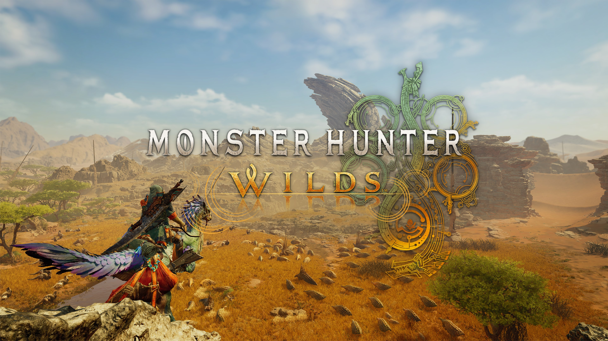
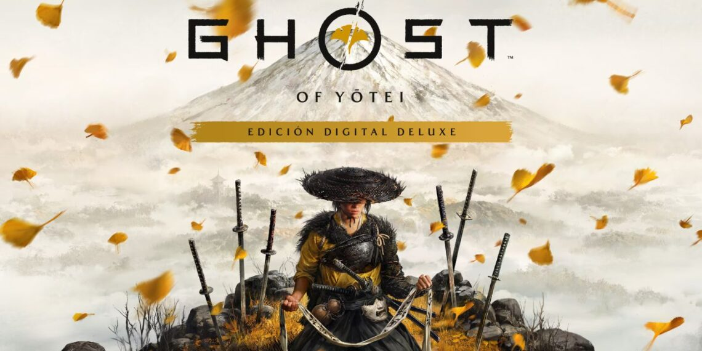
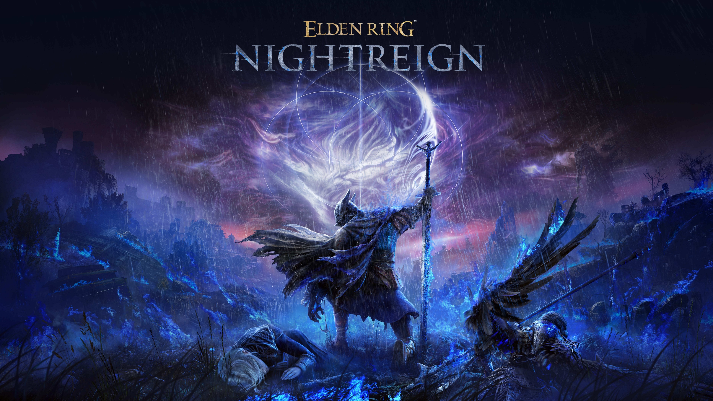
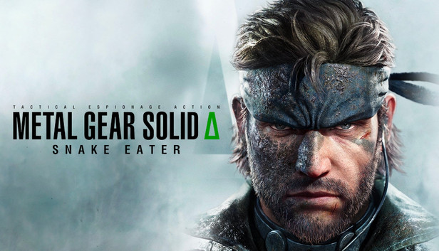
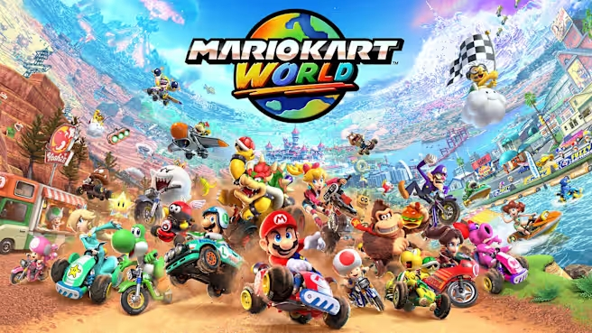
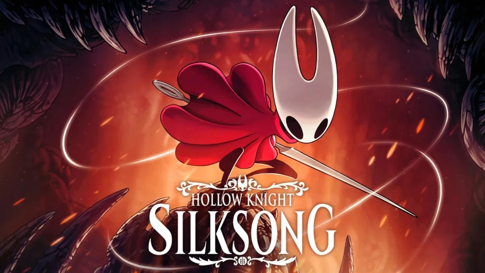

¡Descubre los mejores videojuegos de 2025! Este año trae títulos revolucionarios con gráficos impresionantes, historias envolventes y mecánicas innovadoras que redefinen el gaming. Desde épicos RPG hasta intensos shooters y joyas indie, esta guía te presenta los juegos imprescindibles que marcarán la pauta. ¡Prepárate para una experiencia inolvidable!
Mejores videojuegos de 2025
Monster Hunter Wilds
Desarrolladora: Capcom.
Plataformas: PC, PS5, Xbox Series X/S.
Lanzado el 28 de febrero de 2025. Esta entrega expande el universo de caza de monstruos con un mundo abierto más dinámico y cooperativo, enfatizando la estrategia en equipo y combates intensos contra bestias colosales. Es alabado por su jugabilidad adictiva y actualizaciones que lo hacen ideal para jugar con amigos o en solitario, convirtiéndolo en el juego más vendido del año.

Doom: The Dark Ages

Desarrolladora: id Software (Bethesda).
Plataformas: PC, PS5, Xbox Series X/S (incluye Game Pass).
Lanzado el 15 de mayo de 2025. Un shooter frenético que lleva al Doom Slayer a una era medieval oscura, con mecánicas de combate cuerpo a cuerpo innovadoras como contragolpes y armas improvisadas. Destaca por su violencia visceral, gráficos impresionantes y ritmo implacable, ofreciendo horas de demon-slaying puro y satisfactorio que redefine la saga.
Split Fiction

Desarrolladora: Hazelight Studios.
Plataformas: PC, PS5, Nintendo Switch 2, Xbox Series X/S.
Lanzado el 6 de marzo de 2025. Un juego cooperativo innovador donde dos jugadores alternan entre géneros como shooters, plataformas y puzzles, resolviendo desafíos combinando habilidades únicas. Es un tributo juguetón a los clásicos, con un enfoque en la amistad y la creatividad, y se considera uno de los mejores co-op del año por su variedad y diversión ininterrumpida.
Clair Obscur: Expedition 33

Desarrolladora: Sandfall Interactive.
Plataformas: PC, PS5, Xbox Series X/S (incluye Game Pass).
Lanzado el 24 de abril de 2025. Un RPG por turnos con estética inspirada en el Belle Époque francés, donde un grupo de exploradores enfrenta criaturas mágicas en un mundo pintoresco pero letal. Sobresale por sus personajes profundos, narrativa emotiva y sistema de combate estratégico, ganándose elogios como uno de los indies más impactantes y visualmente cautivadores de 2025.
Death Stranding 2: On The Beach

Desarrolladora: Kojima Productions.
Plataformas: PS5 (exclusivo inicial, con posible lanzamiento en PC más adelante).
Lanzado el de septiembre de 2025. La secuela del innovador título de Hideo Kojima sigue a Sam Porter Bridges en una misión para reconectar un mundo fragmentado, enfrentando criaturas sobrenaturales y entornos surrealistas. Destaca por su narrativa profunda, mecánicas únicas de exploración y entrega, y una estética cinematográfica que combina drama, acción y filosofía. Elogiado por su ambición artística y multijugador asíncrono, es una experiencia polarizante pero inolvidable que consolida a Kojima como un visionario.
Ghost of Yōtei
Desarrolladora: Sucker Punch Productions.
Plataformas: PS5 (exclusivo inicial).
Lanzado el 2 de octubre de 2025. Secuela espiritual de Ghost of Tsushima ambientada en el Japón feudal del siglo XVII, donde una ronin busca venganza en un mundo nevado y hostil. Sobresale por su combate elegante, exploración inmersiva y narrativa poética, con un enfoque en sigilo y duelos épicos que lo posiciona como uno de los mejores action-adventure del año.
Elden Ring: Shadow of the Erdtree
Desarrolladora: FromSoftware.
Plataformas: PC, PS5, PS4, Xbox Series X/S, Xbox One.
Lanzado el 30 de mayo de 2025 (expansión del juego base de 2022). Una aventura independiente en el universo de Elden Ring que reimagina el diseño central con un enfoque en supervivencia cooperativa para 3 jugadores, donde héroes únicos con habilidades sinérgicas exploran Limveld, un mundo cambiante que se altera en cada sesión. Enfrenta amenazas ambientales nocturnas y jefes imponentes llamados Nightlords en combates intensos y estratégicos, destacando por su innovación en co-op, rejugabilidad procedural y la esencia soulslike elevada, atrayendo tanto a fans veteranos como a nuevos jugadores con su atmósfera opresiva y victorias épicas.
Metal Gear Solid Delta: Snake Eater
Desarrolladora: Konami (Kojima Productions no involucrado).
Plataformas: PC, PS5, Xbox Series X/S.
Lanzado el 21 de noviembre de 2025. Un remake completo del clásico de 2004, modernizando gráficos, jugabilidad y narrativa mientras mantiene la esencia del original. Introduce mejoras en sigilo, combate y mecánicas de supervivencia, con una historia enriquecida que profundiza en los personajes y el contexto histórico. Aclamado por revitalizar un hito del gaming, es un imprescindible para fans y nuevos jugadores.
Mario Kart World
Desarrolladora: Nintendo.
Plataformas: Nintendo Switch 2.
Lanzado el 10 de octubre de 2025. La última entrega de la icónica serie de carreras, que lleva a los jugadores a competir en circuitos inspirados en todo el mundo con personajes clásicos y nuevos. Destaca por su jugabilidad accesible pero profunda, gráficos vibrantes y modos multijugador mejorados, consolidándose como uno de los juegos más divertidos y populares del año.
Hollow Knight: Silksong
Desarrolladora: Team Cherry.
Plataformas: PC, PS5, Nintendo Switch 2, Xbox Series X/S.
Lanzado el 12 de septiembre de 2025. La esperada secuela del aclamado Hollow Knight, que sigue a Hornet en una nueva aventura en un reino vibrante y peligroso. Con un enfoque en la exploración, combate fluido y una narrativa profunda, Silksong ha sido elogiado por su diseño artístico impresionante y su desafiante jugabilidad, consolidándose como uno de los mejores metroidvania del año.